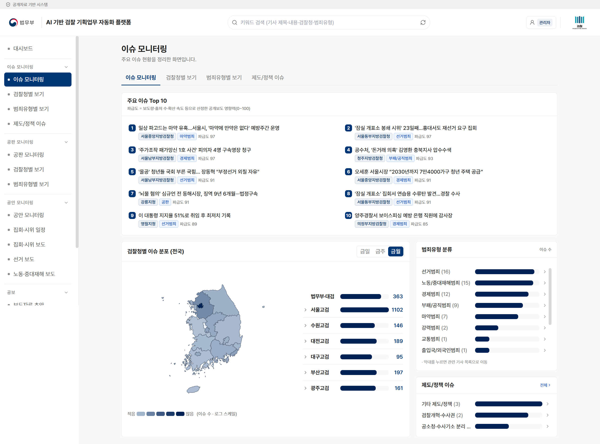

매일 아침 1시간의
반복 업무를 5분으로
AI 기반 검찰 기획업무 자동화 플랫폼
언론보도 수집부터 분류·집계·공보자료 초안 작성까지

AI 기반 검찰 기획업무 자동화 플랫폼1
3 주요 기능① 대시보드
모든 업무가 한 화면에서 시작됩니다
1
통합 진입 화면
집회·시위 요약과 이슈·공판·공안 TOP 5를 한눈에 제시
2
공보 작성 바로가기
보도자료·문자풀 초안 화면으로 즉시 이동
3
업무 동선 최소화
여러 메뉴를 오가던 현황 파악을 한 화면으로 대체
출근 직후 화면 하나로 당일 현황 파악이 가능합니다.

3. 주요 기능 — 대시보드6
3 주요 기능② 이슈 모니터링
중요도 판단을 수치로 뒷받침합니다
1
자동 수집·분류
전국 검찰청 67곳 관할·범죄유형별 분류, 신뢰도·근거 저장
2
중복 기사 통합
동일 사건의 여러 기사를 하나의 이슈로 집계
3
파급도 0~100 정량화
보도량·출처 수·확산 속도 기반 주요 이슈 Top 10 자동 정렬
제도·정책 이슈(검찰개혁·공소청 등)는 주제별로 별도 집계합니다.

3. 주요 기능 — 이슈 모니터링7
3 주요 기능③ 전국 분포 지도
관할별 현황을 지도 한 장으로 파악합니다
1
전국 지도 히트맵
검찰청 실제 좌표 기반, 시도 선택 시 시군구 상세 표시
2
조직도 집계
고검 → 지검 → 지청 체계로 이슈 분포 조회
3
기간별 집계
금일·금주·금월 전환 시 전체 수치 즉시 재계산
지도·조직도·순위표가 동일한 데이터를 사용하여 수치가 일치합니다.

3. 주요 기능 — 전국 지도8
3 주요 기능④ 검찰청별 · 범죄유형별 보기
검찰청별·범죄유형별로 바로 조회합니다
1
검찰청 순위·검색
청 이름 검색으로 순위 즉시 확인, 전월 대비 증감 표시
2
범죄유형별 집계
항목 선택 시 관할별 기사 목록으로 이동
3
기사 검색
유형 내 제목 검색으로 필요한 보도만 추출
요약 화면과 세부 화면의 집계 기준이 동일하여 보고서에 그대로 인용할 수 있습니다.

3. 주요 기능 — 교차 조회9
3 주요 기능⑤ 공판 모니터링
주요 선고사건을 빠짐없이 집계합니다
1
선고 보도 정밀 분류
법원 판결 선고 기사를 선별하여 공판 동향으로 집계
2
주요 사건 Top 10
파급도 순 정렬, 관할청·기저 범죄유형 표시
3
검찰청별·유형별 분포
이슈 모니터링과 동일한 방식의 지도·순위 제공
산재된 공판 보도를 한 화면으로 집계하여 주요 선고사건 누락을 방지합니다.

3. 주요 기능 — 공판10
3 주요 기능⑥ 공안 모니터링
집회 · 선거 · 노동 동향을 자동 수집합니다
1
집회·시위 일정 수집
전국 지방경찰청 공개 게시판을 수집하여 검찰청 관할로 자동 분류
2
3개 영역 보도 TOP 5
집회·시위 / 선거 / 노동·중대재해 보도를 각각 집계
3
수집 현황 공개
경찰청별 수집 성공 여부·정보 반영 시각을 표로 제공
게시판과 기사를 개별 확인하던 동향 점검을 자동 수집·관할 분류로 대체하였습니다.

3. 주요 기능 — 공안11
3 주요 기능⑦ 보도자료 초안
기초 정보만 입력하면 배포 양식 그대로 생성합니다
1
실제 배포 양식 반영
서울중앙지검 배포 보도자료 5건의 형식·문체 분석
2
표준 목차 자동 구성
보도 유의문구 → 공보관 연락처 → 공개요건 → Ⅰ~Ⅳ 목차
3
사실관계는 입력값만 사용
참고자료의 구조·문체만 반영하고 내용은 가져오지 않음
입력부터 복사까지 한 화면에서 처리하며, 담당자는 사실관계 검토와 문구 수정에 집중합니다.

3. 주요 기능 — 보도자료12
3 주요 기능⑧ 문자풀 초안
기자단 공지 문자도 즉시 생성합니다
1
검찰 문자풀 형식 준수
머리글 [○○지검 알림] · 처분 → 경위 → 방침 3단 구성 · 미확정 고지
2
서술식 / 개조식 전환
용도에 맞춰 문체를 선택하여 생성
3
표현 자동 보정
단정 표현을 혐의 단계 표현으로 수정 제안
보도자료와 문자풀이 동일한 입력에서 생성되어 내용이 어긋나지 않습니다.

3. 주요 기능 — 문자풀13
지금 접속하면 바로 동작합니다
현장에서 만든 도구가
현장에서 만든 도구가
행정의 표준이 되도록
검찰에서 검증하고, 법무부 전 직렬과 타 부처로 넓히겠습니다.
감사합니다18